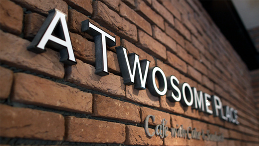
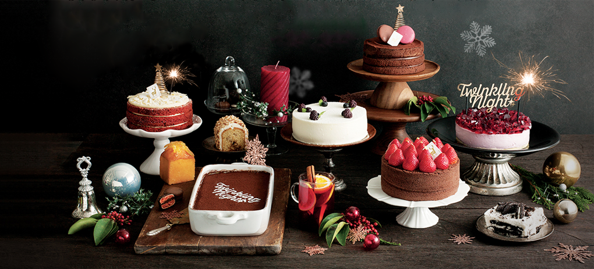

BRAND STORY
프리미엄 디저트카페 투썸플레이스를 소개합니다.

A TWOSOEM PALCE SMALL INDULGENCE,
나만의 즐거움을 만날 수 있는 프리미엄 디저트 카페
투썸플레이스는 따스한 한 잔의 커피가 있는(A cup of Coffee), 우리가 함께 하는(Two of us), 눈과 입이 즐거운 색다른 디저트를 즐기는(Some dessert), 작은 사치를 누릴 수 있는 행복한 공간(Place)입니다.
전문 파티쉐의 손길로 완성도를 높인 케이크, 마카롱 등의 디저트와 깊고 풍부하게 본연의 맛과 향을 살린 커피, 유럽의 고풍스러운 카페에 온듯한 따뜻하고 편안한 분위기로 나만의 작은 즐거움(사치)을 만날 수 있는 특별한 공간을 제공합니다. 또한, 투썸플레이스는 '디저트 카페'의 리딩 브랜드로써, 선도적 디저트 문화와 함께 더욱 차별화된 제품과 서비스를 선보일 것입니다.

TWOSOME PAIRING 투썸 페어링
섬세하게 정성껏 내린 커피와 그에 어울리는 프리미엄 디저트의 조화
투썸의 노하우가 담긴 최상의 커피
투썸플레이스만의 맛있는 커피는 최상의 원두와 최적의 로스팅 포인트, 뛰어난 풍미를 살려내는 에스프레소 추출능력, 이 세가지가 다채롭게 조화되어 만들어집니다.
또한 다크 로스팅과 미디움 로스팅으로 제공되는 원두를 선택하여 취향에 맞는 커피를 즐길 수 있습니다.
다양한 프리미엄 디저트
전문 파티쉐가 매장에서 직접 만들어 완성도를 높인 케이크는 물론, 프랑스 고급 디저트인 마카롱, 정통 이탈리안 티라미수와 아포카토, 달콤바삭한 머랭디저트 파블로바와 입 안에서 부드럽게 녹는 생 초콜릿까지, 어디에도 없는 다양하고 차별화된 디저트를 만나볼 수 있습니다.
자신만의 스타일로 더욱 멋지게 즐길 수 있는 '페어링'
섬세하게 만들어내는 다양한 레시피의 커피메뉴와, 선택의 폭이 넓은 프리미엄 디저트를 한 공간에서 즐길 수 있는 투썸플레이스에서는 저마다 좋아하는 커피에 그에 가장 잘 어울리는 디저트를 매칭하여, 더욱 풍부한 맛과 개성, 색다른 디저트 경험을 즐길 수 있습니다.
HISTORY
프리미엄 디저트 카페의 탄생
소비자에게 커피 전문점조차 익숙치 않았던 2002년, 'Cafe with cake & ansdwich'라는 컨셉으로 전문 파티쉐가 매장에서 직접 만드는 케이크와 샌드위치를 제공하는 디저트 카페로 새로운 카페문화를 선보인 투썸플레이스.
당시에는 생소했던 오픈 주방 시스템으로 고객의 신뢰를 더하고 다양한 프리미엄 케이크와 샌드위치, 디저트 메뉴를 선보여 오픈과 동시에 매니아 층이 형성되기도 했습니다.
커피 전문점의 새로운 기준을 마련하다
2009년, 가맹사업을 시작하면서 아카데미 프로그램을 강화하여 모든 매장에서 기존 브랜드 강점을 최대한 구현하고자 했고 2010년에는 BIlSI 리뉴얼과 함께 더욱 강화된 정통 유럽식 디저트와 유럽풍 살롱을 현대적으로 재해석한 세련되고 시크한 인테리어로 프리미엄 디저트 카페의 새로운 기준을 마련했습니다.
2016년 2월, 신논현역에 커피 전문성을 강화하여 새롭게 선보인 로스터리 카페는 커피와 관련된 모든 것을 한자리에서 경험하고 즐길 수 있는 투썸만의 커피문화공간으로, 커피와 어울리는 프리미엄 디저트와 매장에서 갓 구운 신선한 베이커리를 함께 즐길 수 있으며, 카페문화를 선도하는 투썸의 플래그십 매장으로 주목받고 있습니다.
국내를 넘어 세계로 향하다
2002년 1호점을 시작으로 현재 750여개 매장을 운영하는 투썸플레이스는 2011년 중국 1호점을 시작으로 해외시장에 프리미엄 디저트 문화를 전파하고 있습니다. 대한민국 프리미엄 디저트 카페를 넘어 글로벌 디저트 카페로서 세계로 도약하고 있습니다.
-
-
투썸 로스터리카페 신논현점 오픈
투썸플레이스 700호점 돌파
-
-
투썸 포스커사거리점 오픈
투썸플레이스 600호점 돌파
-
-
투썸플레이스 뉴SI
가로수길점, 광주상무점 오픈
투썸플레이스 500호점 돌파
-
-
투썸 스튜디어(홍대 테디점) 오픈
투썸플레이스 400호점 돌파
-
-
해외 첫 복합 매장 중국리두 오픈
투썸플레이스 200호점 돌파
-
-
투썸 로스터리카페 신논현점 오픈
-
-
BI/SI Renewal
투썸플레이스 100호점 돌파
-
-
투썸플레이스 가맹사업 시행
(안국역 가맹 1호점 오픈)
-
-
투썸플레이스 브랜드 론칭
(1호점 신촌점)